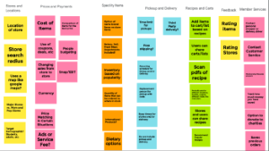
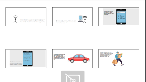
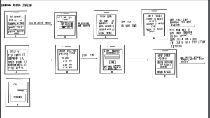

Problem Statement

Individuals need a more cost effective way to buy groceries at a single location because individuals are often busy and don’t have the time to shop at multiple stores for the best deals for their grocery list.
Affinity Diagram
I worked with my team to gather all the necessary requirements and limitations for our grocery shopper.
Personas: 5 personas for grocery shopper
Five personas that could be a typical user of our grocery shopper app.
Storyboard: 5 Storyboards for grocery shopper
Five storyboards that show different scenarios for our app.
Sketches
Five rough sketches that show what possible solutions our app could look like.
Hi-fidelity Prototype

The high fidelity Prototype of Effective Grocery Shopper.